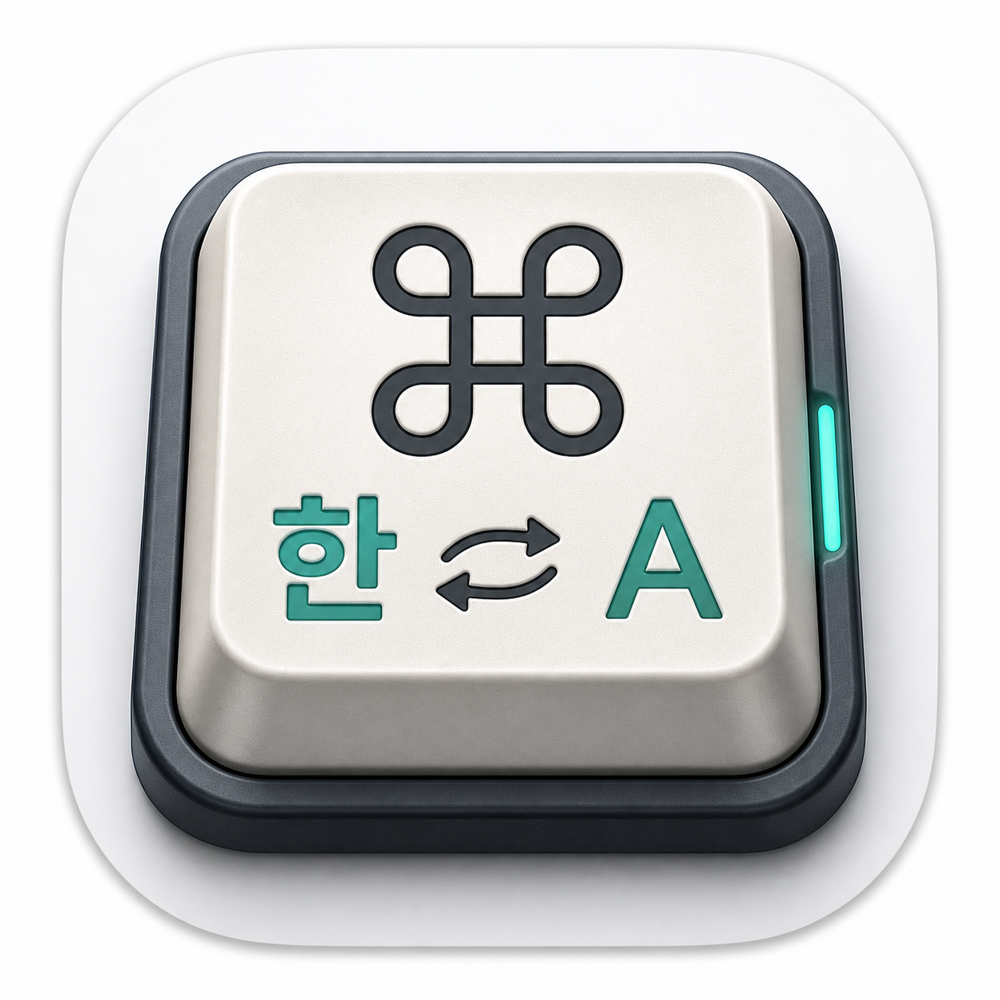
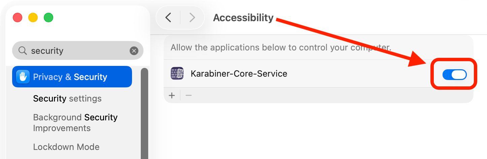
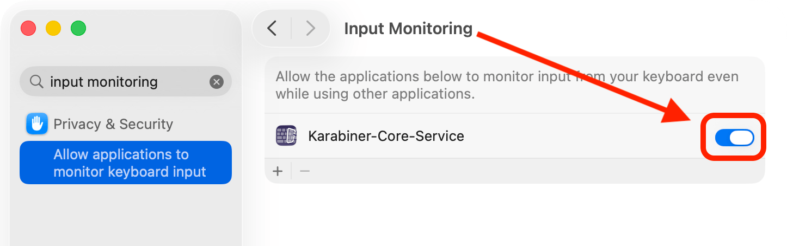

Visual-Design-Concept-Plan 적용 · 와이어프레임 (실제 동작 아님, 클릭으로 화면 전환)

WinMacKey오른쪽 Command 키 하나로 한/영을 전환합니다.
설정은 30초면 끝나요.
활성 앱과 입력 위치를 인식해 한/영 전환을 정확히 처리합니다.

토글을 켤 때 Touch ID나 암호를 물어볼 수 있어요 — 정상입니다.
키 입력 자체를 받아 한/영 키로 변환하려면 입력 모니터링이 필요합니다.

"아까 켰는데?"가 아닙니다 — 별도의 두 번째 권한입니다.
권한이 모두 활성화됐어요. 마지막으로 한 번 재실행하면 적용됩니다.
실행할 때마다 권한을 다시 확인합니다. 문제가 있으면 조용히 넘어가지 않고 여기에 표시돼요.
한/영 전환 처리를 위해 필요
키 입력 수신·변환
일부 외장 키보드 호환용 · 미설정
상태점은 브랜드/성공색(읽기 전용), "시스템 설정 열기" 같은 동작 버튼은 시스템 블루를 사용합니다.
외장 키보드를 연결/분리하면 프로필이 알아서 바뀝니다. 더 이상 수동 전환은 그만.
결제는 브라우저(Gumroad)에서 완료됩니다 · 카드 없이 둘러보기 가능
오른쪽 modifier 키를 한/영 전환에 매핑합니다.
라이트/다크는 시스템 설정을 자동으로 따릅니다. 커스텀 테마와 강제 전환은 Pro입니다.